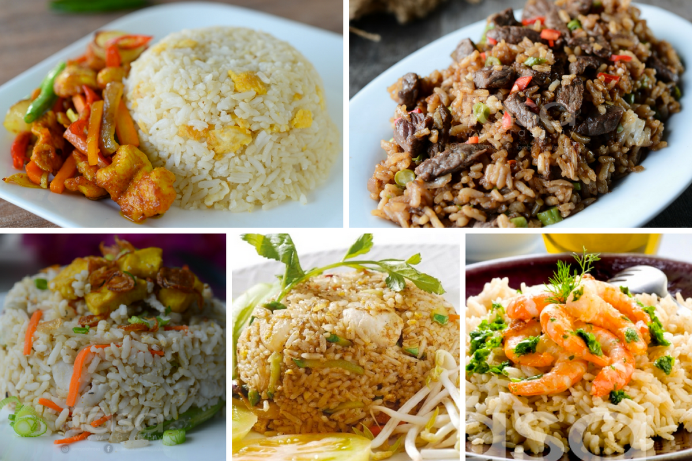

Sejarah
Nasi goreng adalah makanan yang berasal dari negeri China dan mendapat banyak modifikasi di Indonesia. Nasi goreng sudah ada sejak dulu bahkan sejak 4000 tahun sebelum Masehi sebagai makanan tradisional masyarakat Tionghoa atau China.
Pada zaman dulu, masyarakat China tidak suka dengan nasi yang sudah dingin kemudian memasak lagi nasi tersebut menjadi nasi goreng dengan berbagai bumbu dan rempah. Ternyata nasi goreng sangat enak. Sejak saat itulah, nasi goreng menjadi makanan yang begitu digemari. Selain rasanya yang enak, nasi goreng juga digemari karena nasi goreng membuat masyarakat mengurangi pemborosan beras karena nasi goreng terbuat dari nasi dingin atau bahkan nasi sisa.
Bahan Pembuatan
Nasi goreng Indonesia aromanya berbeda dengan nasi goreng dari negara asia lain, baunya lebih bersahaja dan berbau asap, hal ini karena nasi goreng di Indonesia diberi kecap manis atau kadang kala terasi, dan rasanya lebih kuat dan pedas dibanding nasi goreng cina. Nasi goreng biasanya dihidangkan dengan krupuk dan bawang goreng untuk memberikan rasa renyah.
Bahan utama nasi goreng antara lain nasi yang telah masak, kecap manis, bubuk terasi (pasta udang), garam, bawang putih, bawang merah, cabe rawit, daun bawang, pala, kunyit, minyak sayur, bawang merah, gula, pasta jahe, dan irisan mentimun serta tomat untuk hiasan. Beberapa resep bisa menambahkan lada hitam, saus ikan, atau kaldu bubuk sebagai penambah bumbu dan rasa. Telur bisa dicampur menjadi nasi goreng atau digoreng secara terpisah, baik sebagai telur ceplok/telur mata sapi, atau telur dadar (omelet), dan juga telur rebus. Penambahan telur atau tidak biasanya merupakan pilihan, nasi goreng yang dihidangkan dengan telur goreng sering dinamakan nasi goreng spesial atau nasi goreng khusus yang diberi topping telur goreng.
Jenis-Jenis Nasi Goreng

Nasi goreng baik di Indonesia maupun di negara-negara lain dapat memiliki variasi tersendiri tergantung dari daerah asal dan bumbu atau bahan yang digunakan. Variasi ini biasanya dipengaruhi oleh bahan makanan yang biasa digunakan masyarakat setempat dan pengaruh ramuan bumbu dari negara tetangga, ataupun pengaruh budaya etnik asing bawaan yg datang ke negara tersebut. Beberapa jenis nasi goreng yang terkenal diIndonesia antara lain adalah sebagai berikut:
- Nasi goreng ikan asin
- Nasi goreng kambing
- Nasi goreng pete
- Nasi goreng Jawa
- Nasi goreng Aceh
- Nasi goreng babat
- Nasi goreng Bali
- Nasi Goreng Seafood
- Nasi Goreng Sunda